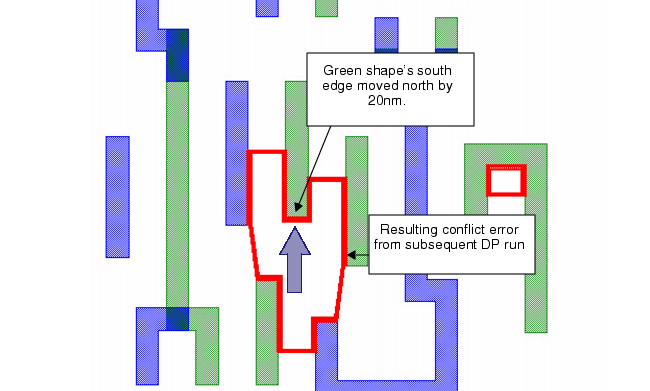
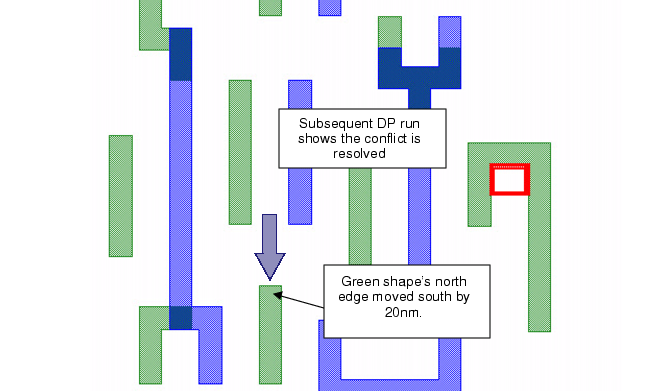

Edit a layout
to resolve errors found by Calibre DP error types.
This example demonstrates
use of conflict and warning rings to fix odd-cycle errors in a layout. This
example does not cover use of Calibre® DESIGNrev™.
Procedure
- Open the input layout for
editing:
- Move the
south edge of the target shape shown by 20 nm.
The first
attempted edit was to move the south edge the indicated shape up
20 nm. As shown in Figure 1, this propagated the error so that
another, separate conflict error appeared after a subsequent DP
run:
Figure 1. First Attempted Edit
and Error Results
- Move the
north edge of the target shape shown south by 20 nm.
The second
edit was to move the north edge of the indicated shape down 20 nm.
As shown in Figure 2, this resolved the error after a subsequent
DP run:
Figure 2. Second Attempted Edit
and Error Resolution